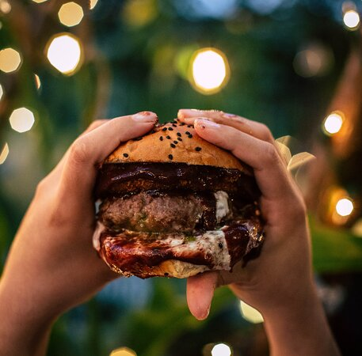

This hamburger consists of hamburger buns, beef, truffle mayo, cheddar cheese,
arugula, sauteed sugary red onion, a slice of tomato and some bacon jam.
Ingredients
- One set of hamburger buns
- 175 grams of ground beef
- Cheddar cheese
- 2 teaspoons of truffle mayo
- Small handful of arugula
- A third of a red onion
- pinch of sugar
- A teaspoon of bacon jam
- 2 thin slices of tomatoes
- Salt and pepper
- Oil for cooking
Steps
- Slice the red onion and fry it on pan with some oil and sugar for 5 minutes on medium-high, don't burn it.
- Make 1 cm thick patties from the ground beef, season them with salt and pepper and fry for 2 minutes per side on hot pan, then flip it, add the cheese, and fry for another 2 minutes.
- Fry the buns on hot pan so they get crispy, not burnt. For about 1 minute for the inside and 30 seconds for the outside of the bun.
- Assemble the hamburger with truffle mayo on top of the base bun, then arugula, red onion, tomato, patty, bacon jam, more mayo on top bun, and put the bun on top.
- Enjoy a very delicious hamburger